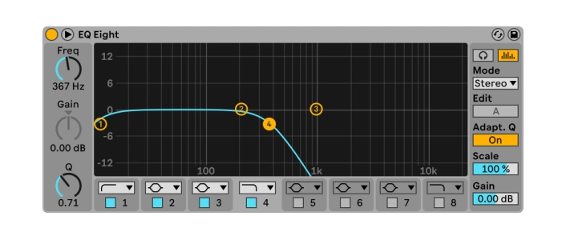

The Synth Gauntlet is a MIDI device controlled by gestures that connects to your DAW, such as Ableton Live. Assign up to three parameters to the device and use intuitive hand gestures to control filters, effects and other elements in real time during your performance.
Instructions
Start Detection
Activating the gesture recognition requires you to press your last three fingers on your palm.
Perform One of Three Gestures
Change Values
Rotate your hand while holding the gesture to adjust the parameter value.
Lock Values
Releasing the gesture locks the value at its current level.
Fabrication
The fabric of the Synth Gauntlet is entirely 3D printed and can be easily assembled at home. Once the electronics are soldered firmly, they can be mounted to the matching fabric patches and lastly connected to the glove.
Printing Specifications
- TPU Flex Filament
- Shore 82A
- Printing Temperature: 240°C
- Infill Zig-Zag 40%
- Printed on Satin Mat
Glove Parts
Parametric Sizing
The provided Rhino file contains a parametric sizing system that allows you to adjust the size of the glove to fit your hand easily.
Electronics
The Synth Gauntlet requires a few components to be soldered together. The following is a list of the components required and their functions.
Components
- Teensy Bit 4.0 (microcontroller)
- MPU-6050 (gyroscope)
- Flex Sensor (gesture input)
- Adafruit Momentary Capacitive Touch Sensor (button)
- NeoPixel 12 LED Ring (visual feedback)
- Custom PCB board OR perfboard
- Jumper wires (20-30 AWG)
- Power supply (3.3V)
- USB cable (for programming)
Circuit Diagram
Setup
Once the components are soldered together, the provided Arduino sketch can be uploaded to the Teensy Bit 4.0. The device will then be ready to use with your DAW.
Audio
Altough the Synth Gauntlet can be used with any kind of audio effect, its initial idea was to design a device that supports live performances of electronic music artists in the genre of "Dungeon Synth". The following genre specific Ableton Live stock plugins are pre-mapped to the Synth Gauntlet in the free to download Ableton Live project file.

Downloads
Arduino Sketch
0.4 MB
Rhino File
10.3 MB
Ableton Live Project File
1.7 MB